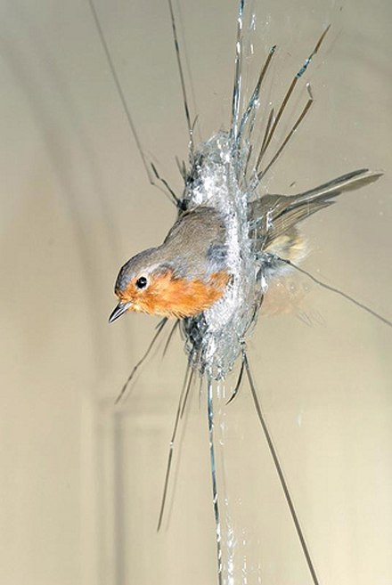
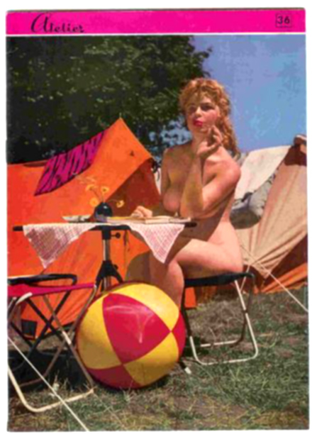

Τίποτε δεν δείχνει καλύτερα τον χαρακτήρα του άνδρα από τον τρόπο με τον οποίο συμπεριφέρεται στις γυναίκες.
Βολταίρος
| |
Panem et circences.
Άρτον και θεάματα.
Γιουβενάλης
| |
Αν δεν σε κλάσει μάστορας δεν γίνεσαι τεχνίτης.
| |
Πάρε το λόγο σε δύο περιστάσεις : ή όταν πρόκειται για κάτι που τέλεια γνωρίζεις, ή όταν η ανάγκη το απαιτεί.
Ισοκράτης
| |
Στα 30 του ο άνθρωπος υποπτεύεται ότι είναι ηλίθιος, στα 40 του είναι σίγουρος και αλλάζει πλάνα.
Γιάνγκ
| |
Το ισχυρότερο, ταχύτερο και ασφαλέστερο μεταφορικό μέσο του κόσμου είναι η φαντασία.
Ιούλιος Βέρν
| |
Ας πηδάμε κι ας γελάμε για να λεν πως δεν πεινάμε.
| |
Επειδή το σαρδόνιο είναι ένα δηλητηριώδες χόρτο,το οποίο προκαλεί σπασμούς σε όλο το σώμα αυτού που το έφαγε.Έτσι συστέλλονται και τα χείλη και φαίνονται τα δόντια δημιουργώντας την ψευδαίσθηση του γέλιου σ’αυτούς που τον βλέπουν.
| |
Η σεξουαλική μου ζωή είναι μια καταστροφή. Την τελευταία φορά που ήμουνα μέσα σε μια γυναίκα ήταν όταν επισκέφτηκα το άγαλμα της ελευθερίας.
Γούντι Άλεν
| |
Χρειάζεται πολύ ταλέντο για να μεγαλώσετε χωρίς να γίνεται ενήλικες.
Ζάκ Μπρέλ
| |
Η δημοσιογραφία είναι ένα επάγγελμα που περνάς τη μισή σου ζωή για πράγματα που δεν ξέρεις και την άλλη μισή αποσιωπώντας αυτά που ξέρεις.
Ενρι Μπερί
| |
Το μόνο καλό στον εμφύλιο όπου οι δικοί μας πολεμούν με τους δικούς μας, είναι ότι συνήθως κερδίζουν οι δικοί μας. | |
Να δημιουργείς χωρίς να απαιτείς αναγνώριση,
Να πράττεις χωρίς να διεκδικείς εύσημα,
να καθοδηγείς χωρίς να παρεμβαίνεις.
Λάο Τσέ
| |
Ποιητής είναι ένας τρελός χαμένος στην περιπέτεια.
Paul Verlaine
| |
Από τη στιγμή που παντρεύεσαι την ερωμένη σου δημιουργείς μία κενή θέση.
Τζίμι Γκόλντγουίν
| |
Η περιέργεια είναι το χέρι που σε σπρώχνει να ανοίξεις την πόρτα και να φύγεις.
Κέν Λόουτς
| |
Δεν χρειάζεται να υποφέρεις για να γίνεις ποιητής η εφηβεία είναι αρκετό βασανιστήριο για όλους μας.
John Ciardi
| |
Η λέξη ψωμί είναι η θερμότερη και πιο καλοσυνάτη λέξη. Να την γράφετε με κεφαλαίο όπως το όνομά σας.
Ρωσία
| |
Αρχή καθάρσεως ησυχία.
Αγ. Ιωάννης της Κλίμακος
| |
Τα ευτυχισμένα νιάτα είναι μια επινόηση των γέρων.
Πόλ Γκιμάρ
| |
Καλύτερα να χαραμίζει κανείς τα νιάτα του παρά να μην τα κάνει τίποτα.
Ζόρζ Κουρτελίν
| |
Η μνήμη κοιτάζει πάντα πίσω, ενώ η φαντασία κοιτάει πάντα μπροστά.
Ουμπέρτο Έκο
| |
Ποιητής είναι ένας άνθρωπος που τοποθετεί μία σκάλα για να φτάσει ένα αστέρι και την ανεβαίνει παίζοντας ταυτόχρονα και ένα βιολί.
Edmond de Goncourt
| |
Θεέ μου πόσο όμορφη ήσουνα εχθές στο τηλέφωνο.
Σασά Γκιντρί
| |
Δεν ξεχνάω ποτέ πρόσωπα, αλλά στην περίπτωσή σας θα κάνω μια εξαίρεση.
Γκάουτσο Μάρξ
| |
Αυτό το σχέδιο το έκανα σε πέντε λεφτά, αλλά μου πήρε εξήντα χρόνια για να φτάσω σ' αυτό το σημείο.
Pierre-Auguste Renoir
| |
Έχετε μια απίθανη τύχη : απόψε είμαι ελεύθερος.
| |
Μ’ αρέσει να διαβάζω ποίηση το βράδυ- ένας γιατρός που ξέρω ισχυρίζεται ότι αυτό συμβαίνει επειδή η ποίηση είναι το μόνο πράγμα που μπορείς να διαβάσεις όταν είσαι μεθυσμένος.
John Lanchester, The Sunday Times
Γαμιστερό κομμάτι απο το cd "Coptic Dub"
[download mp3: the_embassadors] | |
Το να γράφεις ποίηση είναι ο καλύτερος τρόπος που ξέρω να λύσεις τον κόμπο της εμμονής. Είναι πιο φτηνός από την ψυχανάλυση και καλύτερος για σένα από το να μεθοκοπάς.
Gwyneth Lewis, PBS Bulletin
[download mp3: bruce_haack] | |
Το να γράφεις ποίηση είναι σαν να βρίσκεις το δρόμο για το σπίτι σου ενώ δεν ήξερες ότι έχεις χαθεί.
Diane Lockward, The Star-Ledger
Το κομμάτι είναι απο Caretaker, μουσική που ακούγεται.....μετά απο το τέλος του κόσμου
[download mp3: the_caretaker] | |
Η ποίηση είναι ο συνοπτικός τρόπος για να συμμετέχεις στην εμπειρία των άλλων.
Jay Rogoff, The Saratogian
Το κομμάτι είναι τρελλή τσαμπουκαλεμένη φανκιά απο Βραζιλία
[download mp3: moro_no_brazil] | |

Η προοπτική του να γίνει το παιδί κάποιου ποιητής είναι εφιάλτης για τους γονείς : “μία ζωή με εκδόσεις περιοδικών μικρής κυκλοφορίας τα οποία κανείς δεν διαβάζει, προσωρινά ραντεβού σε κολλέγια, δουλοπρεπή παρακάλια για υποτροφίες στο εθνικό ίδρυμα για τις τέχνες και στα Guggenheim, στενάχωρες σχέσεις με φοιτητές που καταστρέφουν γάμους, και στο τέλος, το βλέμμα κάτω στον ποταμό ή η τελευταία ματιά στην κουζίνα πριν ανάψει το γκάζι.” Και όλη αυτή η φασαρία, περιέργως, ποτέ δεν δημιουργεί υλικό για ποίηση , ούτε καν δρα σαν μία καλή πηγή έκφρασης.
Katherine A Powers, The Boston Globe
Το κομμάτι είναι απο το cd "L’autopsie Phenomenale De Dieu" του Kreng
[download mp3: kreng] | |
Μπιστόλι είναι αυτό στη τσέπη σου ή χάρηκες που με είδες ;
Mae West
| |
Dura Lex
Σκληρός Νόμος
Λατινικά
| |
Κάποτε έρχεται η στιγμή της αναχώρησης, έστω και εάν δεν έχεις να πας πουθενά.
Τένεσι Γουίλιαμς
| |
Ο αληθινός σοφός δεν δένεται με καμία πίστη.
Ίμπν Ελ Αράμπι
| |

Γίνεται συχνά κανείς αποφασιστικός από αδυναμία, και τολμηρός από δειλία.
La Rochfoucald
| |
Αν πιάσω στο χέρι μου αυτή την πέτρα, σύντομα δεν θα την νοιώθω καθόλου – θα έλεγε κανείς πως ανήκει στο σώμα μου.
Fernando Pessoa
| |
Δεν μοιάζει πια σημαντικό αν με αγαπάνε οι πάντες ή όχι. Σημαντικό για εμένα είναι να τους αγαπάω εγώ. Όταν νοιώθεις έτσι αλλάζει όλη σου η ζωή. Η ζωή σου γίνεται η πράξη της προσφοράς.
Beverly Sills
| |
Έχω άσχημη πείρα από την πείρα μου.
Zarko Petan
| |
Και γιατί παρακαλώ θα πρέπει να φτιάξω πίτες τόσο νόστιμες σαν αυτές που φτιάχνει η μητέρα μου όταν είναι πολύ απλό να τις φτιάξει η ίδια.
Χ. Άρνοου
| |
Δεν έχεις ποτέ μια δεύτερη ευκαιρία για να κάνεις μια πρώτη εντύπωση.
Αγγλία
| |
Το να περιμένεις ότι ο κόσμος θα σου φερθεί καλά επειδή είσαι καλός, είναι σα να περιμένεις ότι δεν θα σου επιτεθεί ο ταύρος επειδή είσαι χορτοφάγος.
Ντένις Ουόλει
| |
Όσο πιο λίγα πράγματα έχει να κάνει κανείς, τόσο πιο λίγο χρόνο βρίσκει να τα κάνει.
Λόρδος Τσέστερφιλντ
| |
Δεν μπορώ να πιστέψω σε ένα Θεό που θέλει να τον υμνούν όλη την ώρα.
Νίτσε
| |
Ουδέποτε επί δείπνοις ύστατος αφικνούμην.
Ποτέ δεν έφτανα τελευταίος στα δείπνα.
Κλέων
| |
Το να χρησιμοποιήσω βιάγκρα στη ηλικία μου είναι σα να σηκώσω ολοκαίνουργια σημαία σε ένα ερείπιο.
Χάρβει Κόρμαν
| |
Επιτέλους τώρα θα ξέρω που περνάει τώρα τις νύχτες του.
Μαντάμ Ντε Μπουφλέ, στην κηδεία του συζύγου της
| |
Ο καλύτερος τρόπος να εκδικηθείς είναι να περνάς καλά.
Ισπανία
| |
Οι καπνιστές είναι τα πιο ενδιαφέροντα άτομα σε ένα τραπέζι.
Μισέλ Φάιφερ
| |
Αδύνατον να σας πω την ηλικία μου, αλλάζει συνέχεια.
Αλφόνς Αλέ
| |
O μόνος λόγος ύπαρξης του χρόνου είναι, για να μην συμβαίνουν όλα τα πράγματα ταυτόχρονα.
Άλμπερτ Άινστάιν
| |
Ένας ποιητής μπορεί να επιβιώσει από τα πάντα, όχι όμως και από ένα τυπογραφικό λάθος.
Oscar Wilde
| |

Τζέντλεμαν είναι αυτός που μπορεί να περιγράψει τη Σοφία Λόρεν χωρίς να κουνήσει τα χέρια του.
Μαρσέλ Ασάρ
| |
Η καλύτερα κλεισμένη πόρτα είναι αυτή που μπορούμε να αφήσουμε ανοιχτή.
Κίνα
| |
Μόνο τα ψόφια ψάρια πάνε με το ρεύμα.
Σάρα Πέιλιν
| |
Η ιδεολογία είναι η ευγενής τήβεννος με την οποία οι πολιτικοί καλύπτουν το πάθος τους για εξουσία.
Άλντους Χάξλει
| |
Οι γονείς είναι τα κόκαλα πάνω στα οποία τα παιδιά ακονίζουν τα δόντια τους.
Πίτερ Ουστίνωφ
| |

Δεν είδαμε ποτέ έναν τυφλό σε κατασκήνωση γυμνιστών.
Γούντι Άλεν
| |
Η πραγματικότητα είναι μια ψευδαίσθηση που οφείλεται στην έλλειψη του αλκοόλ.
| |
Δυο μήλα της γύρεψα κι αυτή μου δίνει τρία.
Δε θέλω εγώ τα μήλα σου τα τσαλαπατημένα, θέλω τα δυό του κόρφου σου τα μοσχομυρισμένα.
Δημοτικό
| |
Αν όλοι οι άντρες συμπεριφέρονταν μετά το γάμο τους όπως φέρονταν κατά την διάρκεια του αρραβώνα, θα είχαμε τα μισά διαζύγια και τις διπλές πτωχεύσεις.
Ζαν Ντε Λα Κούρ
| |
Όταν μια γυναίκα παντρεύεται, ανταλλάσει την προσοχή των πολλών με την έλλειψη προσοχής του ενός.
Ελεν Ρόαουνλαντ
| |
Υπάρχουν τέσσερις ηλικίες στη ζωή ενός ανθρώπου, αυτή στην οποία πιστεύει στον Άγιο Βασίλη, αυτή που δεν πιστεύει στον Άγιο Βασίλη, αυτή που είναι ο Άγιος Βασίλης, και σε αυτήν που μοιάζει στον Άγιο Βασίλη.
| |
Τα αφεντικά του τύπου είναι άνθρωποι του χρήματος και της εξουσίας. Αυτά τα δύο πάθη σε αυτό το είδος των ανθρώπων σβήνουν πολύ αργά.
Μισέλ Ουελμπέκ
| |
Δεν υπήρξα ποτέ φτωχός, μόνο άφραγκος. Η φτώχεια είναι μια ψυχολογική κατάσταση.
Μάικ Τόντ
| |
Η επανάσταση πρέπει να είναι διαρκής και όχι μόνιμη γιατί δημιουργεί μόνιμους υπαλλήλους.
Μιχάλης Κατσαρός
| |
Μπορεί εσείς να μην ασχολείστε με την πολιτική, αλλά η πολιτική σίγουρα ασχολείται μαζί σας έτσι κι αλλιώς.
Σάρλ Ντε Μονταλαμπέρ
| |
Τα γεγονότα είναι πολύ πολύ πιο πάνω από τα λόγια, αλλά εμείς απλώς θα θέλαμε να πούμε για τα φράγκα από τις πολεμικές αποζημιώσεις να μας τα βάλουνε σε ένα λογαριασμό που θα τους δώσουμε στην Ελβετία, γιατί άλλος τα θέλει τώρα, άλλος αργότερα κ.λ.π. ίσως να είναι ο ίδιος λογαριασμός που είχαν βάλει τα χρήματα του *σχεδίου Μάρσαλ.
*355 εκ. δολάρια...το ποσό αυτό - για να καταλάβουμε και το μέγεθός του - ήταν περισσότερο κατά τέσσερις φορές από το προπολεμικό εθνικό εισόδημα της Ελλάδας και μεγαλύτερο από τα εξωτερικά δάνεια που εισέπραξε η Ελλάς από την Επανάσταση του 1821 ως το 1930, δηλαδή σε διάστημα περίπου 110 ετών ήταν δε, κατά 94% δωρεάν, δηλαδή, δεν επιστράφηκε ποτέ. Αλλά και δεν τα είδε κανένας από τον κοσμάκη ποτέ....γίνανε πολυκατοικίες και καταθέσεις σε λαμογιο/λογαριασμούς.
Υ.Γ. Τι έγιναν εκείνα τα blog που καλούσαν το κόσμο για φωτιές κ.λ.π. ;
| |
Nil desperantum !
Μην απελπίζεσαι !
Οράτιος
| |
|
35 readers online
|